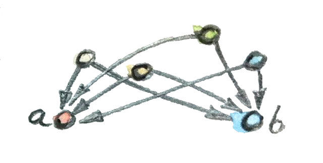

6 ProductและCoproduct (Draft)
ในกรีซโบราณนักเขียนบทละครEuripidesเคยพูดไว้ว่า “มนุษย์ทุกๆคนนั้นเหมือนกันกับกลุ่มคนที่เขาอยากจะคบ” เราถูกนิยามโดยความสัมพันธ์ของเรา ไม่มีที่ใหนที่ถูกไปยิ่งกว่าในทฤษฎีcategory ถ้าเราต้องการที่จะแยกบางวัตถุในcategoryหนึ่ง เราสามารถที่จะทำแบบนั้นได้โดยการอธิบายรูปแบบของสัมพันธ์กับวัตถุต่างๆ (และกับตัวมัน) ความสัมพันธ์เหล่านี้ถูกกำหนดไว้โดยmorphismต่างๆ
ได้มีการสร้างที่ทั่วไปในทฤษฎีcategoryที่เรียกว่าการสร้างแบบสากล (universal construction)สำหรับการนิยามวัตถุต่างๆในรูปแบบของความสัมพันธ์ของมัน หนึ่งในแบบของการทำแบบนี้คือการเลือกรูปแบบ รูปร่างเฉพาะที่ถูกสร้างจากวัตถุและmorphisms และตามหาการปรากฏตัวของรูปแบบนั้นทั้งหมดในcategoryนั้นๆ ถ้ามันเป็นรูปแบบที่ทั่วไปมากพอและcategoryมีขนาดที่ใหญ่ คุณก็มีโอกาสที่จะเจอพวกมันมากขึ้น เคล็ดลับก็คือการจัดตั้งอันดับในแบบต่างๆภายในสิ่งที่เราเจอและเลือกสิ่งที่สามารถถูกจะพิจารณาว่าเป็นเหมาะสมมากที่สุด
กระบวนการแบบนี้มีความคล้ายเคียงกับการที่เราทำการค้นหาในเว็บ คำถามที่เราพิมพ์ก็เป็นเหมือนรูปแบบ คำถามที่มีความทั่วไปสูงก็จะให้เราคำตอบที่มากมาย(recallที่ใหญ่) บางตัวอาจจะตรงประเด็นบางตัวอาจจะไม่ เพื่อในการขจัดคำตอบที่ไม่ตรงประเด็นคุณต้องที่จะปรับแต่งคำถามของคุณ นี่จะเป็นการเพิ่มความแม่นยำ(precision) สุดท้ายแล้วเครื่องมือค้นหาจะจัดอันดับของคำตอบและหวังว่าผลลัพธ์หนึ่งเดียวที่คุณมีความสนใจจะอยู่ในจุดบนสุดของlist
6.1 วัตถุเริ่มต้น (Initial Object)
รูปร่างที่ง่ายที่สุดก็คือวัตถุเดี่ยว แน่นอนว่าได้มีตัวอย่างของรูปร่างนี้อยู่อย่างมากมายเทียบเท่าจำนวนของวัตถุในcategoryที่จะมีให้ ได้มีหลายอย่างสามารถที่จะถูกเลือกได้ เราต้องการที่จะจัดตั้งการจัดอันดับบางอย่างและลองที่จะหาวัตถุที่อยู่ข้างบนลำดับชั้นนี้ วิธีการที่เรามีเพียงอย่างเดียวก็คือmorphism ถ้าคุณคิดว่าmorphismเป็นลูกศร มันก็เป็นไปได้ที่จะมีจำนวนรวมของลูกศรจากจุดๆหนึ่งของcategoryไปยังอีกจุดหนึ่ง นั้นก็จริงอยู่ในcategoryแบบorderedอย่างpartial orders เราสามารถที่จะgeneralizeแนวคิดของการลำดับความสำคัญของวัตถุโดยการเสนอว่าวัตถุ\(a\)นั้นมี“ความเริ่มต้น”มากกว่าวัตถุ\(b\)ถ้ามันมีลูกศร(morphism)ที่มาจาก\(a\)ไปยัง\(b\) เราก็อาจจะนิยามวัตถุเริ่มต้นจริงๆในฐานะสิ่งที่มีลูกศรไปยังทุกๆวัตถุ ชัดเจนว่ามันไม่มีการรับประกันว่าวัตถุแบบนี้มีอยู่และนั้นก็ไม่ใช่ปัญหา ปัญหาที่ใหญ่กว่านี้คือการที่อาจจะมีวัตถุเหล่านี้มากเกินไป คำตอบมีมากมายแต่ไม่มีความแม่นยำ วิธีการแก้คือการนำแนวคิดจากcategoryแบบorderedที่อนุญาตให้มีลูกศรได้มากสุดแค่หนึ่งตัวระหว่างสองวัตถุ นั้นก็คือมีวิธีเดียวในการที่จะเป็นวัตถุที่น้อยกว่าหรือเท่ากับกับวัตถุอื่น ที่จะนำไปสู่นิยามนี้ของวัตถุเริ่มต้น
วัตถุเริ่มต้นจริงๆ คือวัตถุที่มีmorphismเพียงหนึ่งเดียวไปยังทุกๆวัตถุในcategory

แต่ว่า การทำแบบนี้ก็ไม่ได้รับประกันความเป็นเอกลักษณ์ของวัตถุเริ่มต้น (ถ้ามันมีอยู่) แต่มันรับประกันในสิ่งที่ดีรองลงมาก็คือความเป็นเอกลักษณ์จนถึงความisomorphism(uniqueness up to isomorphism) ความเป็นisomorphismนั้นมีความสำคัญในทฤษฎีcategoryดังนั้นผมจะพูดถึงเกี่ยวกับมันในอีกไม่นาน ในตอนนี้เรามาเห็นด้วยร่วมกันว่าความเป็นเอกลักษณ์จนถึงความisomorphismเหมาะสมกับการใช้คำว่า “จริงๆ” (the)ในนิยามของวัตถุเริ่มต้น
นี่คือตัวอย่างบางอย่าง วัตถุเริ่มต้น(จริงๆ)ในsetที่มีลำดับบางส่วน (partially ordered set บ่อยครั้งที่ใช้ชื่อว่า poset)คือสมาชิกที่เล็กที่สุด ในposetบางตัวไม่มีวัตถุเริ่มต้นอย่างเช่นsetของจำนวนเต็ม(ทั้งบวกและลบ)ที่มีความสัมพันธ์เป็นความน้อยกว่าหรือเท่ากับเป็นmorphism
ในcategoryของsetและfunction วัตถุเริ่มต้นคือsetว่าง จำได้ว่าsetว่างตรงกันกับtypeของHaskellอย่างVoid (ไม่มีtypeที่ตรงกันกับtypeนี้ในC++)และfunction polymorphicที่มีอยู่อันเดียวจากVoidไปยังtypeอื่นๆถูกเรียกว่าabsurd
absurd :: Void -> aมันคือครอบครัวของmorphismที่ทำให้Voidเป็นวัตถุเริ่มต้นในcategoryของtype
6.2 วัตถุสุดท้าย (Terminal Object)
เรามาตามต่อกับรูปแบบของวัตถุเดี่ยวแต่เราจะมาเปลี่ยนวิธีการในการจัดอันดับของวัตถุต่างๆ เราจะพูดได้ว่าวัตถุ\(a\)นั้น”มีความเป็นสุดท้าย”มากว่าวัตถุ\(b\)ถ้ามีmorphismจาก\(b\)ไปยัง\(a\) (สังเกตได้ว่ามีการเปลี่ยนทิศทาง) เราจะตามหาวัตถุที่มีความเป็นสุดท้ายมากกว่าวัตถุอื่นๆในcategory อีกครั้งหนึ่งเราจะย้ำความเป็นเอกลักษณ์
วัตถุสุดท้ายจริงๆ คือวัตถุที่มีmorphismเพียงหนึ่งเดียวจากทุกๆวัตถุในcategory

และอีกครั้งที่วัตถุสุดท้ายนั้นมีความเป็นเอกลักษณ์จนถึงความisomorphismที่ผมจะแสดงให้เห็นในอีกไม่ช้า แต่ก่อนหน้านั้นเรามาดูในบางตัวอย่าง ในposetตัวหนึ่ง วัตถุสุดท้าย(ถ้ามันมีอยู่)คือวัตถุที่ใหญ่ที่สุด ในcategoryของsetวัตถุสุดท้ายคือsetที่มีสมาชิกเพียงตัวเดียว เราได้พูดเกี่ยวกับsetที่มีสมาชิกเพียงตัวเดียวแล้ว พวกมันตรงกันกับtypeอย่างvoidในC++และtype unit ()ในHaskell มันคือtypeที่มีแต่ค่าๆเดียวที่ที่เขียนเป็นนัยในC++และอย่างเปิดเผยในHaskellที่มี()เป็นสัญลักษณ์ เราจะก็สถาปนาว่าได้มีfunction pureในแค่แบบเดียวจากtypeอะไรก็ได้ไปยังtype unit
unit :: a -> ()
unit _ = ()ดังนั้นเงื่อนไขสำหรับการเป็นวัตถุสุดท้ายก็จะถูกบรรลุ
สังเกตได้ว่าในตัวอย่างนี้เงื่อนไขที่ให้มีความเป็นเอกลักษณ์นั้นสำคัญมากเพราะว่าอาจจะมีsetอื่นๆ (ที่จริงๆแล้วก็รวมไปถึงsetทั้งหมดยกเว้นsetว่าง)ที่จะมีmorphismเข้ามาจากทุกๆset ตัวอย่างเช่นได้มีfunctionที่มีค่าboolean (predicate)ที่ถูกนิยามในtypeทุกๆtype
yes :: a -> Bool
yes _ = Trueแต่Boolนั้นไม่ใช่วัตถุสุดท้าย ได้มีfunctionที่มีค่าBooleanอย่างน้อยหนึ่งfunctionจากทุกๆtype(ยกเว้นVoidที่ที่ทั้งสองfunctionที่เท่ากันกับabsurd):
no :: a -> Bool
no _ = Falseในการย้ำความเป็นเอกลักษณ์ได้ให้ความแม่นยำกับเราในระดับที่เหมาะสมพอที่จะจำกัดนิยามของวัตถุสุดท้ายให้เป็นแค่typeเดียว
6.3 Duality
คุณไม่สามารถที่จะเมินเฉยความสมมาตรระหว่างวิธีการที่เรานิยามวัตถุเริ่มต้นและวัตถุสุดท้าย ความแตกต่างอย่างเดียวระหว่างสองวัตถุก็คือทิศทางของmorphisms มันเป็นไปว่าในทุกๆcategory\(\textbf{C}\)เราสามารถที่จะนิยามcategoryตรงข้าม (opposite category)\(\textbf{C}^\text{op}\)โดยการย้อนกลับทิศทางของทุกๆลูกศร categoryตรงข้ามได้บรรลุทุกเงื่อนไขของcategory ตราบเท่าที่เราให้การนิยามใหม่ของการประกอบกันในขณะเดียวกัน ถ้าmorphismต้นฉบับคือ \(f::a\rightarrow b\) และ \(g::b\rightarrow c\) ที่ถูกประกอบกันไปยัง \(h::a\rightarrow c\) ด้วย \(h=g\circ f\) แล้วmorphismย้อนกลับคือ \(f^\text{op}::b\rightarrow a\)และ\(g^\text{op}::c\rightarrow b\)จะถูกประกอบกันเป็น\(h^\text{op}::c\rightarrow a\)และ\(h^\text{op}=f^\text{op}\circ g^\text{op}\)และการย้อนกลับของลูกศรidentityคือเป็นแบบเดิม
Dualityเป็นคุณสมบัติของcategoryมีความสำคัญเพราะว่ามันเพิ่มผลผลิตให้กับนักคณิตศาสตร์ที่ทำงานกับทฤษฎีcategoryเป็นสองเท่า สำหรับทุกๆการสร้างที่คุณคิดออกมามันก็จะมีสิ่งที่เป็นตรงกันข้ามของมัน และในทุกทฤษฎีบทที่คุณพิสูจน์คุณก็ได้มาอีกหนึ่งแบบฟรีๆ การสร้างในcategoryตรงข้ามนั้นมักจะมีคำว่า “co” เป็นคำนำหน้าดังนั้นคุณจะมีproductและcoproduct monadsและcomonad coneและcocone limitและcolimitและอื่นๆ แต่จะไม่มีcocomonadนะ เพราะว่าการย้อนศรสองครั้งเราก็กลับมายังที่เดิม
มันก็เป็นไปตามว่า วัตถุสุดท้ายคือวัตถุเริ่มต้นในcategoryตรงข้าม
6.4 Isomorphisms
ในฐานะที่เป็นโปรแกรมเมอร์ เรารู้เป็นอย่างดีว่าการนิยามความเท่ากันเป็นสิ่งที่ไม่ตรงไปตรงมา อะไรคือการที่สองวัตถุที่การเท่ากัน แล้วพวกมันจำเป็นที่จะอยู่ในที่เดียวกันในmemory (ความเท่ากันในแบบpointer) ? หรือมันเพียงพอที่จะให้ค่าของทุกๆส่วนประกอบนั้นเหมือนกัน (เพื่อที่จะเรียกมันว่าเท่ากัน)? แล้วจำนวนเชิงซ้อนจะถูกเรียกว่าเท่ากันถ้าหนึ่งในนั้นถูกเขียนในรูปแบบของจำนวนจริงและจำนวนจินตภาพ และอีกตัวถูกเขียนในรูปแบบของmodulusและangle(มุม)? คุณอาจจะคิดว่านักคณิตศาสตร์ได้มีคำตอบถึงความหมายของความเท่ากันแต่พวกเขายังไม่มีคำตอบกับสิ่งเหล่านี้ พวกเขามีปัญหาเหมือนกันในการมีหลายคำนิยามที่แย้งกัน(competing)ของความเท่ากัน ได้มีความเท่ากันแบบpropositional ความเท่ากันแบบintensional ความเท่ากันแบบextensional และความเท่ากันในฐานะpathในทฤษฎีtypeแบบhomotopy และก็มีแนวคิดที่อ่อนกว่า(weaker notion)ของisomorphism และก็อ่อนยิ่งกว่าของความเท่าเทียมกัน(equivalence)
แนวคิดคือว่าวัตถุที่isomorphicกันมีลักษณะที่เหมือนกัน(มีรูปร่างเหมือนกัน) มันหมายความว่าในทุกๆส่วนของวัตถุหนึ่งตรงกันกับบางส่วนของอีกวัตถุหนึ่งโดยการโยง(mapping)แบบหนึ่งต่อหนึ่ง เท่าที่อุปกรณ์ของเราจะสามารถบอกได้ ทั้งสองวัตถุคือสำเนาที่สมบูรณ์ในแบบของแต่ละอัน ในเชิงคณิตศาสตร์มันหมายความว่าได้มีการโยงกันจากวัตถุ\(a\)ไปยังวัตถุ\(b\) และได้มีการโยงกันจากวัตถุ\(b\)ไปยังวัตถุ\(a\) และพวกมันเป็นinverseของแต่ละอัน ในทฤษฎีcategoryเราจะใช้morphismต่างๆแทนการโยงกัน isomorphismก็คือmorphismที่สามารถinverseได้หรือคู่ของmorphismโดยที่ตัวๆหนึ่งเป็นinverseของอีกตัวหนึ่ง
เราเข้าใจinverseในความหมายของการประกอบกันและidentityโดยที่\(g\)คือinverseของmorphism\(f\)ถ้าการประกอบกันของทั้งสองคือmorphism identityในที่นี้มีอยู่สองสมการเพราะว่ามันมีสองวิธีในการประกอบmorphismทั้งสอง
f . g = id
g . f = idในตอนที่ผมเขียนว่า วัตถุเริ่มต้น(สุดท้าย)นั้นความเป็นเอกลักษณ์จนถึงความisomorphism ผมหมายความว่า ถ้ามีวัตถุเริ่มต้น(สุดท้าย)สองชิ้นแล้วพวกมันก็จะisomorphic นั่นค่อนข้างง่ายที่จะเห็นได้ สมมติว่ามีวัตถุเริ่มต้นสองชิ้นคือ\(i_1\)และ\(i_2\) เนื่องด้วย\(i_1\)เป็นวัตถุเริ่มต้นก็จะมีmorphismเพียงอันเดียว\(f\)จาก\(i_1\)ไปยัง\(i_2\) ในแบบเดียวกันที่\(i_2\)เป็นวัตถุเริ่มต้นก็จะมีmorphismเพียงอันเดียว\(g\)จาก\(i_1\)ไปยัง\(i_2\) แล้วอะไรคือการประกอบกันของmorphismนี้ละ?
การประกอบกันของ\(g\circ f\)ต้องเป็นmorphismจาก\(i_1\)ไปยัง\(i_1\) แต่\(i_1\)เป็นวัตถุเริ่มต้นก็หมายความว่าได้มีแค่morphismอันเดียวจาก\(i_1\)ไปยัง\(i_1\) เนื่องด้วยเราอยู่ในcategoryเรารู้ว่ามันมีmorphism identityจาก\(i_1\)ไปยัง\(i_1\)และเนื่องด้วยมันมีได้แค่หนึ่งตัว มันก็จะต้องเป็นmorphismนี้(ก็คือmorphism identity) ดังนั้น\(g\circ f\)จึงต้องเท่ากับidentity ในทางเดียวกัน\(f\circ g\)ต้องเท่ากับidentityเพราะว่ามันมีแค่morphismอันเดียวจาก\(i_2\)กลับมายัง\(i_2\) นี่พิสูจน์ได้ว่า\(f\)และ\(g\)ต้องเป็นinverseระหว่างกัน ดังนั้นในทุกๆวัตถุเริ่มต้นต้องisomorphicกัน
สังเกตได้ว่าในการพิสูจน์นี้เราได้ใช้ความเป็นเอกลักษณ์ของmorphismจากวัตถุเริ่มต้นไปยังตนเอง ถ้าเราไม่มีสิ่งนี้เราจะไม่สามารถที่จะพิสูจน์ส่วนของความ”จนถึงความisomorphism”ได้ แต่ทำไมเราต้องการความเป็นเอกลักษณ์ของ\(f\)และ\(g\) นั่นก็เพราะว่ามันไม่ได้แค่การที่วัตถุเริ่มต้นจะเป็นเอกลักษณ์จนถึงความisomorphismแต่รวมถึงการที่มัน เป็นเอกลักษณ์จนถึงความisomorphismที่เป็นเอกลักษณ์ ในหลักการแล้วมันเป็นไปได้ที่จะมีมากว่าisomorphismอันหนึ่งระหว่างวัตถุสองอย่างๆแต่มันไม่เป็นอย่างนั้นในที่นี้ ความ”เป็นเอกลักษณ์จนถึงความisomorphismที่เป็นเอกลักษณ์“คือคุณสมบัติสำคัญของการสร้างแบบสากล
6.5 Products
วัตถุที่สร้างแบบสากลอย่างต่อไปคือproduct เรารู้ว่าอะไรคือcartesian productระหว่างสองset นั้นก็คือsetของpairต่างๆ แต่อะไรคือรูปแบบที่เชื่อมโยงsetที่เป็นproductกับsetที่เป็นส่วนประกอบ ถ้าเราสามารถที่จะตามหาพวกมันได เราก็จะสามารถที่จะgeneralizeไปยังcategoryอื่นๆ
สิ่งที่เราสามารถที่จะพูดได้ทั้งหมดคือว่าได้มีfunctionอยู่สองตัว ก็คือprojectionsจากproductไปยังแต่ละส่วนประกอบ ในHaskell functionทั้งสองจะถูกเรียกว่าfstและsndและพวกมันเลือกส่วนประกอบแรกและส่วนประกอบสองของpairตามลำดับ
fst :: (a, b) -> a
fst (x, y) = xsnd :: (a, b) -> b
snd (x, y) = yในที่นี้functionเหล่านี้ถูกนิยามโดยการใช้การจับคู่รูปแบบ(Pattern matching)ของargumentของพวกมัน รูปแบบที่คู่กับpairอย่างไดก็ได้แบบ(x, y)และมันดึงส่วนประกอบต่างๆไปยังตัวแปรxและy
นิยามเหล่านี้สามารถที่จะถูกทำให้ง่ายขึ้นโดยการใช้ตัวแทน(wildcard)
fst (x, _) = x
snd (_, y) = yในC++เราอาจจะใช้functionที่เป็นtemplateตัวอย่างเช่น
template<class A, class B> A
fst(pair<A, B> const & p) {
return p.first;
}การมีสิ่งนี้อาจจะดูเป็นสิ่งรู้ได้แบบจำกัด เรามาลองพยายามที่จะนิยามรูปแบบของวัตถุและmorphismในcategoryของsetที่จะนำเราไปสู่การสร้างของproductระหว่างsetทั้งสองอย่าง\(a\)และ\(b\) รูปแบบนี้ประกอบด้วยวัตถุ\(c\)และmorphismสองตัวอย่าง\(p\)และ\(q\)ที่เชื่อมต่อมันกับ\(a\)และ\(b\)ตามลำดับ
p :: c -> a
q :: c -> bทุกๆวัตถุ\(c\)ที่สามารถเข้ากับรูปแบบนี้ได้จะถูกพิจารณาให้เป็นวัตถุที่มีคุณสมบัติในการเป็นproduct ก็อาจจะมีวัตถุแบบนี้อยู่หลายตัว

ตัวอย่างเช่น เรามาลองที่จะเลือกส่วนประกอบสองอย่างเป็นtypeของHaskellทั้งสองIntและBoolและมาดูว่ามีวัตถุที่มีคุณสมบัติในการเป็นproductอะไรบ้าง
Intก็เป็นวัตถุที่มีคุณสมบัติอย่างหนึ่ง Intสามารถที่จะถูกมองให้เป็นวัตถุที่มีคุณสมบัติสำหรับproductของIntและBoolได้หรือเปล่า? ได้มันเป็นไปได้นี่คือprojectionของมัน
p :: Int -> Int
p x = x
q :: Int -> Bool
q _ = Trueนั้นค่อนข้างที่จะน่าเบื่อแต่ก็ตรงกับเกณฑ์ที่วางไว้
นี่คืออีกตัวอย่างหนึ่ง(Int, Int, Bool) มันคือtupleที่มีสมาชิกอยู่สามตัวหรือเรียกว่าtriple และนี่คือmorphismทั้งสองที่จะทำให้มันเป็นวัตถุที่มีคุณสมบัติ (เราได้ใช้การจับคู่รูปแบบกับtriple)อย่าง
p :: (Int, Int, Bool) -> Int
p (x, _, _) = x
q :: (Int, Int, Bool) -> Bool
q (_, _, b) = bคุณอาจจะสังเกตได้ว่าในขณะที่วัตถุที่มีคุณสมบัติตัวแรกนั้นเล็กเกินไปมันไดัแค่ครอบคลุมมิติของIntของproduct แต่ในวัตถุตัวที่สองนั้นก็ใหญ่เกินไป มันมีมิติของIntที่มากเกินกัน
แต่เรายังไม่ได้สำรวจอีกส่วนหนึ่งของวัตถุที่ถูกสร้างแบบสากลก็คือการจัดอันดับ เราต้องการความสามารถในการเปรียบเทียบสองวัตถุที่มีรูปแบบของเรา เราต้องการที่จะเปรียบเทียบวัตถุที่มีคุณสมบัติอย่าง\(c\)และprojectionทั้งสอง\(p\)และ\(q\)ของมันกับวัตถุที่มีคุณสมบัติอย่าง\(c'\)และprojectionทั้งสอง\(p'\)และ\(q'\)ของมัน เราต้องการที่จะบอกได้ว่า\(c\)นั้นดีกว่า\(c'\) ถ้าได้มีmorphismจาก\(c'\)ไปยัง\(c\)แต่นี้มีความอ่อนเกินไป เราก็ต้องการที่จะให้projectionทั้งสอง”ดีกว่า”หรือ”มีความเป็นสากลมากกว่า” เมื่อเทียบกับprojectionของ\(c'\) นั่นหมายความว่าprojection\(p'\)และ\(q'\)สามารถที่จะถูกสร้างใหม่จาก\(p\)และ\(q\)โดยการใช้\(m\)
p' = p . m
q' = q . mสมการเหล่านี้สามารถถูกมองในอีกแบบหนึ่งโดยการที่\(m\)แยกตัวประกอบของ\(p'\)และ\(q'\) ลองคิดว่าถ้าสมการเหล่านี้อยู่ในรูปของจำนวนธรรมชาติและจุดคือการคูณ เราเห็นว่า\(m\)คือตัวประกอบร่วมที่มี\(p'\)และ\(q'\) ร่วมกันใช้
เพื่อที่จะให้เห็นภาพ ให้ผมได้ลองที่จะแสดงว่าpairของ(Int, Bool)กับprojectionที่canonical(เป็นค่าเริ่มต้น/ตามธรรมชาติ)อย่างfstและsndนั้น”ดีกว่า”อย่างแท้จริงเมิ่อเทียบกับวัตถุที่มีคุณสมบัติทั้งสองที่ผมเสนอไปก่อนหน้านี้

mappingmสำหรับfunctionแรกคือ
m :: Int -> (Int, Bool)
m x = (x, True)ชัดเจนว่าprojectionอย่างpและqสามารถที่จะถูกสร้างใหม่ในแบบนี้
p x = fst (m x) = x
q x = snd (m x) = Truemของตัวอย่างที่สองนั้นก็สามารถที่จะถูกกำหนดอย่างเป็นเอกลักษณ์ว่า
m (x, _, b) = (x, b)เราสามารถที่จะแสดงว่า (Int, Bool) นั้นดีกว่าวัตถุที่มีคุณสมบัติทั้งสอง เรามาดูว่าทำไมในทางตรงกันจึงไม่จริง เราสามารที่จะหาm'ที่จะช่วยเราในการสร้างfstและsndใหม่จากpและq
fst = p . m'
snd = q . m'ในตัวอย่างแรกของเราqreturnTrueตลอดและเรารู้ว่ามันมีpairที่ตัวประกอบที่สองคือFalseเราจึงไม่สามารถที่จะสร้างsndจากqใหม่
ในตัวอย่างที่สองนั้นแตกต่างออกไป เรามีข้อมูลมากพอหลังจากการใช้pและqแต่มันมีมากกว่าหนึ่งวิธีในการแยกตัวประกอบfstและsnd เพราะว่าทั้งpและqไม่สนใจตัวประกอบที่สองของtriple m'ของเราจึงสามารถที่จะใส่อะไรก็ได้ในนั้น เราจึงสามารถที่จะมี
m' (x, b) = (x, x, b)หรือ
m' (x, b) = (x, 42, b)และอื่นๆ
นำมันมารวมด้วยกัน ถ้าเรามีtypecที่มีprojectionอยู่สองตัว มันก็จะมีmเพียงอย่างเดียวจากcไปยังcartesian product(a, b)ที่แยกตัวประกอบของทั้งสอง ในความเป็นจริงแล้วมันแค่รวมpและqมาอยู่ในpair
m :: c -> (a, b)
m x = (p x, q x)นั้นทำให้cartesian product(a, b)เป็นสิ่งที่ลงตัวที่สุดสำหรับเรา นั้นหมายความว่าวัตถุที่ถูกสร้างแบบสากลนี้สามารถสร้างได้ในcategoryของset มันเลือกproductของสองsetอะไรก็ได้
ในตอนนี้เรามา(พยายามที่จะ)ลืมเกี่ยวกับsetและทำการนิยามproductของสองวัตถุในcategoryแบบไหนก็ได้ โดยการใช้การสร้างแบบสากล productแบบนี้ไม่จำเป็นที่จะต้องมีอยู่แต่ในตอนที่มันมีอยู่ มันก็จะมีความเป็นเอกลักษณ์จนถึงความisomorphism
Productของสองวัตถุ\(a\)และ\(b\)คือวัตถุ\(c\)ที่มาคู่กับprojectionสองตัว ในการที่ว่าสำหรับทุกๆวัตถุ\(c'\)ที่คู่กับprojectionสองตัว มันมีmorphism\(m\)เอกลักษณ์จาก\(c'\)ไปยัง\(c\)ที่ทำการแยกตัวประกอบprojectionทั้งสอง
ในfunctionลำดับสูงที่สร้างfunctionในการแยกตัวประกอบอย่างmจากสิ่งที่มีคุณสมบัติทั้งสองในบางครั้งจะถูกเรียกว่าfactorizer ในกรณีของเรามันก็อาจจะเป็นfunctionดังนี้
factorizer :: (c -> a) -> (c -> b) -> (c -> (a, b))
factorizer p q = \x -> (p x, q x)6.6 Coproduct
เหมือนกันกับการสร้างแบบอื่นๆในทฤษฎีcategory productนั้นมีdualของมันที่จะถูกเรียกว่าcoproduct ในตอนที่เราย้อนทางลูกศรในรูปแบบของproductเราก็จะได้วัตถุ\(c\)คู่กับinjectionsสองตัวiและjซึ่งเป็นmorphismจาก\(a\)และ\(b\)ไป\(c\)
i :: a -> c
j :: b -> c
ในการจัดอันดับนั้นก็ทางกลับด้านก็คือ วัตถุ\(c\)นั้น”ดีกว่า”วัตถุ\(c'\)ที่มาคู่กับinjectionsสองตัว\(i'\)และ\(j'\)ถ้าได้มีmorphsim\(m\)จาก\(c\)ไปยัง\(c'\)ที่แยกตัวประกอบของinjectionsทั้งสอง
i' = m . i
j' = m . jวัตถุที่“ดีที่สุด”ที่ที่มีmorphismเพียงอย่างเดียวที่ต่อมันเข้ากับวัตถุรูปแบบเดียวกันจะถูกเรียกว่าcoproduct ถ้ามันมีตัวตนอยู่มันก็จะเป็นเอกลักษณ์จนถึงความisomorphism
Coproductระหว่างวัตถุทั้งสองอย่าง\(a\)และ\(b\)คือวัตถุ\(c\)ที่มาคู่กับinjectionสองตัวที่ในทุกๆวัตถุอื่นๆ\(c'\)ที่มาคู่กับinjectionสองตัว มันก็จะมีmorphism\(m\)เอกลักษณ์จาก\(c\)ไปยัง\(c'\)ที่แยกตัวประกอบของinjectionsทั้งสอง
ในcategoryของset coproductก็คือdisjoint unionระหว่างsetทั้งสอง สมาชิกของdisjoint unionระหว่าง\(a\)กับ\(b\)คือสมาชิกของ\(a\)หรือสมาชิกของ\(b\)ถ้าsetสองsetนี้มีสมาชิกเหมือนกัน disjoint unionของมันก็จะมีสำเนาของทั้งสองที่เป็นส่วนประกอบร่วม คุณสามารถที่จะคิดว่าสมาชิกของdisjoint unionเหล่านี้ได้ถูกทำเครื่องหมายโดยตัวระบุที่ชี้ไปยังต้นทางของมัน
สำหรับโปรแกรมเมอร์มันง่ายกว่าที่จะเข้าใจcoproductในรูปแบบของtypeต่างๆในแบบว่า: มันคือunionที่มีการระบุตัว(tagged untion)ของtypeทั้งสอง C++นั้นรองรับunionแต่มันไม่มีการระบุตัว นั่นหมายความว่าในโปรแกรมของคุณ คุณจะต้องติดตามว่าสมาชิกตัวไหนของunionนั้นสมบูรณ์ ในการสร้างunionที่มีการระบุตัว คุณต้องนิยามตัวระบุซึ่งเป็นenumerationและรวมมันกับunion ตัวอย่างเช่น unionที่มีการระบุตัวระหว่างintและchar const *ก็อาจจะถูกเขียนได้ว่า
struct Contact {
enum { isPhone, isEmail } tag;
union { int phoneNum; char const * emailAddr; };
};injectionทั้งสองสามารถถูกเขียนในฐานะconstructorsหรือในฐานะfunctionsตัวอย่างเช่นในที่นี้injectionตัวแรกในฐานะfunctionPhoneNum
Contact PhoneNum(int n) {
Contact c;
c.tag = isPhone;
c.phoneNum = n;
return c;
}มันนำ(injects)จำนวนเต็มไปยังสู่Contact
unionที่มีการระบุตัวก็สามารถถูกเรียกว่าvariantและก็ได้มีvariantที่มีความคล่องตัวอย่างมากถูกนำไปใส่ในlibrary boostอย่าง boost::variant
ในHaskellคุณสามารถที่จะนำdata typeต่างๆมารวมกันเพื่อที่จะเป็นunionที่มีการระบุตัวโดยการแยกdata constructorด้วยแถบแนวตั้ง ตัวอย่างของContactสามารถูกแปลไปเป็นการประกาศดังนี้
data Contact = PhoneNum Int | EmailAddr Stringในที่นี้ PhoneNumและEmailAddrเป็นทั้งconstructor(injections)และในฐานะตัวระบุตัวสำหรับการจับคู่รูปแบบ(เดี่ยวจะกลับมาในจุดนี้) ต้วอย่างเช่นนี้คือวิธีการที่คุณจะสร้างcontactจากหมายเลขโทรศัพท์
helpdesk :: Contact
helpdesk = PhoneNum 2222222ไม่เหมือนกับการเขียนในแบบมาตราฐานของproductที่ถูกสร้างเข้าไปในHaskellในฐานะpairเริ่มต้น การเขียนแบบมาตราฐานของcoproductคือdata typeที่เรียกว่าEitherที่ถูกนิยามในPreludeมาตราฐานว่า
data Either a b = Left a | Right bมันรับparameterที่เป็นtypeสองtypeอย่างaและbและมีconstructorสองตัวคือLeftที่เอาค่าของtypeaเข้ามาและRightที่เอาค่าของtypebเข้ามา
เหมือนกันกับการที่เรานิยามการแยกตัวประกอบสำหรับproduct เราก็สามารถที่จะนิยามสิ่งนี้สำหรับcoproduct ถ้าเรามีtypecที่มีคุณสมบัติและinjectioniและjที่มีคุณสมบัติ การแยกตัวประกอบสำหรับEitherก็ได้นำไปสู่functionในการแยกตัวประกอบอย่าง
factorizer :: (a -> c) -> (b -> c) -> Either a b -> c
factorizer i j (Left a) = i a
factorizer i j (Right b) = j b6.7 ความไม่สมมาตร(Asymmetry)
เราได้เห็นนิยามที่เป็นdualityทั้งสองชุดแล้ว นิยามของวัตถุสุดท้ายสามารถหามาจากนิยามของวัตถุเริ่มต้นโดยการย้อนกลับทิศทางของลูกศร ในแบบเดียวกันนิยามของcoproductสามารถถูกหามาจากนิยามของproduct แค่ในcategoryของsetวัตถุเริ่มต้นนั้นมีความแตกต่างอย่างมากจากวัตถุสุดท้ายและ coproductมีความแตกต่างอย่างมากจากproduct เราจะเห็นในหลังจากนี้ว่าproductทำตัวเหมือนการคูณ โดยที่วัตถุสุดท้ายเล่นเป็นบทของเลขหนึ่ง ในทางตรงกันข้ามcoproductทำตัวเหมือนการบวกโดยที่วัตถุเริ่มต้นเล่นเป็นเลขศูนย์ โดยเฉพาะสำหรับsetจำกัด ขนาดของproductคือการคูณกันระหว่างขนาดของแต่ละset และขนาดของcoproductคือการนำขนาดต่างๆมาบวกกัน
นี่แสดงให้เห็นว่าcategoryของsetนั้นไม่ได้สมมาตรในทิศทางของการกลับของทิศทางของลูกศร
สังเกตว่าในขณะที่setว่างมีmorphismตัวเดียวไปยังsetใดๆก็ตาม (functionabsurd)แต่มันไม่มีmorphismที่เข้ามา setที่มีสมาชิกเพียงตัวเดียวก็มีmorphismตัวเดียวจากมันไปยังsetใดๆก็ตามแต่มันก็มีmorphismออกไปยังทุกๆset (ยกเว้นอันที่ว่าง) เราได้เห็นสิ่งนี้มาก่อน morphismที่ออกไปเหล่านี้จากวัตถุสุดท้ายมีบทบาทที่สำคัญในการเลือกสมาชิกของsetอื่นๆ(เพราะว่าsetว่างไม่มีสมาชิกจึงไม่มีอะไรจะเลือก)
มันคือความสัมพันธ์ของsetที่มีสมาชิกเพียงตัวเดียวต่อproductที่ทำให้มันแตกต่างจากcoproduct มาลองใช้setที่มีสมาชิกเพียงตัวเดียวที่มีtype unit()เป็นตัวแทนในฐานะวัตถุที่มีคุณสมบัติสำหรับรูปแบบของproductอีกตัวหนึ่ง(ที่ด้อยกว่ามาก) โดยที่มีprojectionสองตัวอย่างpและq functionจากsetที่มีสมาชิกเพียงตัวเดียวไปยังsetที่เป็นส่วนประกอบ ทั้งสองเลือกสมาชิกจริงๆ(ที่เป็นรูปธรรม)จากsetทั้งสอง เพราะว่าproductมีความสากลจึงมีmorphism(ที่เป็นเพียงอย่างเดียว)จากวัตถุที่มีคุณสมบัติของเรา (นั้นก็คือsetที่มีสมาชิกเพียงตัว)ไปยังproductนั้น morphismนี้เลือกสมาชิกจากsetที่เป็นproduct (นั้นก็คือเลือกpairจริงๆ) มันก็แยกตัวประกอบของprojectionทั้งสองก่อนหน้านี้
p = fst . m
q = snd . mในตอนที่กระทำกับค่าของsetที่มีสมาชิกเพียงตัวเดียว()ที่เป็นสมาชิกแค่หนึ่งตัวในset สมการทั้งสองก็จะออกมาเป็น
p () = fst (m ())
q () = snd (m ())เนื่องว่า m () คือสมาชิกของproductที่ถูกเลือกโดยmสมการเหล่านี้บอกเราว่าสมาชิกที่ถูกเลือกโดยpจากsetตัวแรก p ()คือตัวประกอบแรกของpairที่ถูกเลือกโดยm ในทางเดียวกัน q ()นั้นก็เท่ากับตัวประกอบที่สอง สิ่งนี้ตรงกันกับความเข้าใจของเราว่าสมาชิกของproductคือpairของสมาชิกต่างๆสำหรับsetต่างๆที่เป็นตัวประกอบ
ไม่มีการตีความในแบบง่ายๆของcoproduct เราอาจจะลองที่จะใช้setที่มีสมาชิกเพียงตัวเดียวในฐานะวัตถุที่มีคุณสมบัติสำหรับcoproductในความพยายามในการดึงสมาชิกจากมัน แต่เราต้องมีinjectionสองตัวเข้ามาหามันแทนที่จะเป็นprojectionออกจากมัน สิ่งเหล่านี้ไม่ได้บอกอะไรกับเราเกี่ยวกับที่มาของมัน (จริงๆแล้วเราเห็นว่าพวกมันไม่สนใจparameterที่เข้ามา) morphismเอกลักษณ์จากcoproductไปยังsetที่มีสมาชิกเพียงตัวเดียวของเราก็ไม่ได้บอกเราเช่นกัน categoryของsetc8jดูแตกต่างอย่างมากถ้ามองจากทิศทางของวัตถุเริ่มต้นเมื่อเทียบกับ การมองจากทิศทางของวัตถุสุดท้าย
นี่ไม่ใช่คุณสมบัติที่อยู่ข้างในของsetมันคือคุณสมบัติของfunctionที่เราใช้ในฐานะmorphismใน\(\textbf{Set}\) functionนั้นโดยทั่วไปนั้นไม่มีความสมมาตร ขออนุญาตให้ผมอธิบาย
functionจำเป็นที่ต้องถูกนิยามสำหรับทุกๆสมาชิกในsetที่เป็นdomain(ในการเขียนโปรแกรมเราเรียกว่าfunction total) แต่มันไม่จำเป็นที่จะต้องครอบคลุมcodomainทั้งหมด เราได้เห็นตัวอย่างที่สุดขั้วของมันนั้นก็คือ functionจากsetที่มีสมาชิกเพียงตัวเดียว functionที่เลือกแต่สมาชิกเดียวในcodomain (จริงๆแล้วfunctionจากsetว่างจึงจะเป็นตัวอย่างสุดขั้วจริงๆ) ในตอนที่ขนาดของdomainมีขนาดที่เล็กมากๆเมื่อเทียบกับขนาดของcodomain เรามักจะที่จะคิดถึงfunctionแบบนี้ในฐานะการฝัง(embedding)ของdomainในcodomain ตัวอย่างเช่นเราสามารถที่จะคิดถึงfunctionจากsetที่มีสมาชิกเพียงตัวเดียวในฐานะการฝังสมาชิกหนึ่งเดียวของมันลงในcodomain ผมเรียกสิ่งเหล่านี้ว่าfunction embeddingแต่นักคณิตศาสตร์ชอบมากกว่าที่จะให้ชื่อกับตัวตรงข้ามกับมัน ในการที่functionต่างๆที่เติมเต็มcodomainของมันอย่างเต็มจะที่ถูกเรียกว่าsurjectiveหรือonto
อีกจุดเริ่มต้นของความไม่สมมาตรคือการที่functionต่างๆได้รับอนุญาตที่จะโยงหลายๆสมาชิกของsetที่เป็นdomainไปยังหนึ่งสมาชิกของcodomain พวกมันสามารถรวมสมาชิกต่างๆได้ ตัวอย่างสุดขั้วแบบนี้คือfunctionที่โยงsetทั้งหมดไปยังsetที่มีสมาชิกเพียงตัวเดียว คุณได้เห็นfunction polymorphicอย่างunitที่ทำแบบนั้น การรวมกับสามารถเพิ่มขึ้นได้โดยการประกอบกันเท่านั้น การประกอบกันของfunctionที่ทำการรวมนั้นสามารถรวมได้มากกว่าfunctionเดี่ยวๆ นักคณิตศาสตร์ได้มีชื่อสำหรับfunctionที่ไม่ทำการรวมสมาชิก พวกมันมีชื่อว่าinjective หรือone-to-one
แน่นอนว่าได้มีfunctionที่ไม่ใช้ทั้งการฝังหรือทำการรวมสมาชิก พวกมันจะถูกเรียกว่าbijectionsและพวกมันมีความสมมาตรอย่างแท้จริงเพราะว่ามันสามารถที่จะมีinverseได้ ในcategoryของset isomorphismนั้นเป็นสิ่งเดียวกันกับbijection
6.8 โจทย์ท้าทาย
- ลองแสดงว่าวัตถุสุดท้ายนั้นมีความเป็นเอกลักษณ์จนถึงความisomorphism
- อะไรคือproductของวัตถุในposet คำใบ้: ลองใช้การสร้างแบบสากล
- อะไรคือcoproductของวัตถุในposet
- ลองเขียนสิ่งที่เป็นเหมือน
EitherในHaskellในฐานะtypeแบบgenericในภาษาโปรดของคุณ(ที่ไม่ใช้Haskell) - ลองแสดงว่า
Eitherนั้นเป็นcoproductที่ดีกว่าintที่มีinjectionสองแบบ อย่างนี้
int i(int n) { return n; }
int j(bool b) { return b ? 0: 1; }คำใบ้: ลองนิยามfunctionแบบนี้
int m(Either const & e);ที่แยกตัวประกอบของiและj 6. ต่อเนื่องจากปัญหาก่อนหน้านี้ อะไรคือวิธีการที่คุณจะเสนอว่าintที่คู่กับinjectionทั้งสองiและjไม่สามารถที่จะ”ดีกว่า”Eitherได้ 7. ต่อเนื่องจากปัญหาก่อนหน้านี้ แล้วinjectionเหล่านี้ละ?
int i(int n) {
if (n < 0) return n;
return n + 2;
}
int j(bool b) { return b ? 0: 1; }- ลองคิดขึ้นมาถึงวัตถุที่มีคุณสมบัติด้อยกว่าในการเป็นcoproductระหว่าง
intและboolที่ไม่สามารถเป็นสิ่งที่ดีกว่าEitherเพราะว่ามันอนุญาตให้มีหลายmorphismที่ยอมรับได้จากมันไปยังEither
6.9 บรรณานุกรม
วิดีโอproductและcoproductโดยCatsters1